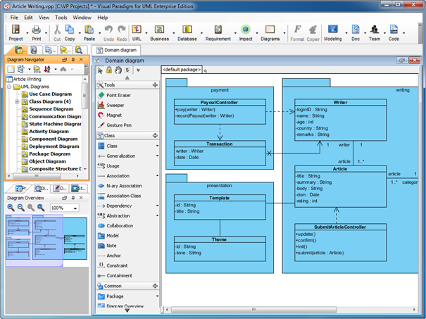
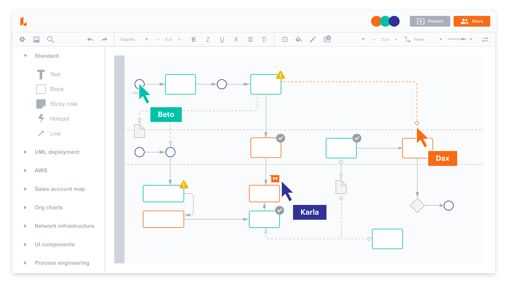

Uppercase vahendid on tarkvaraarenduse tööriistad, mida kasutatakse arenduse varastes etappides:
upperCASE vahendid aitavad:
Visual Paradigm on Upper-CASE vahend, mida kasutatakse tarkvaraarenduse analüüsi ja disaini faasis:
Mida saab Visual Paradigmiga teha?
Visual Paradigm logo:
Visual Paradigm programmi aken:

Lucidchart on veebipõhine UpperCASE vahend, mida kasutatakse diagrammide ja süsteemimudelite loomiseks.
Mida saab Lucidchartiga teha?
Lucidchart logo:
Lucidchart programmi aken:
